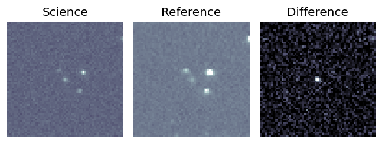
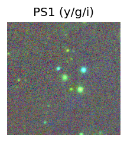
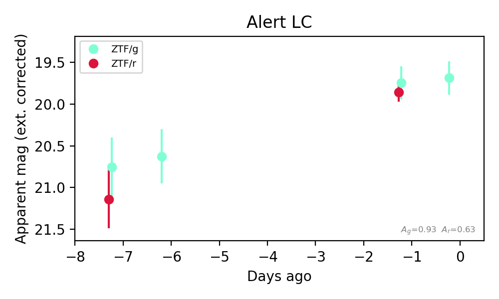
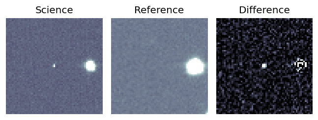
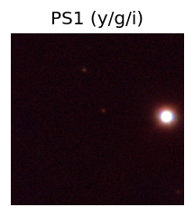
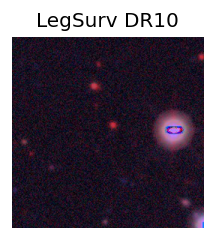
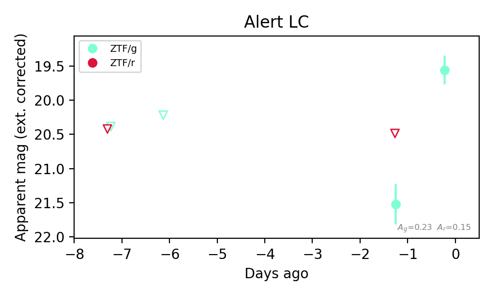

Candidate List 20260911Last night — ZTF: 2,404 passed basic cuts (92 young) · LSST: 0 passed basic cuts (0 young)Previous Day Next Day
Section 1: New Sources (age<1d) Section 2: Old (1-5d) sources observed last nightplaceholder
Section 1: New Afterglow/FBOT Cands Last Night (0)
Section 2: Older Sources Observed Last Night (4)
0. [ZTF] ZTF26absyacr (FBOT?) [Back to Top] [Share] [Trigger Swift] [Fritz Alert] [Fritz Source] [Lasair]RA, Dec: 344.07161, 23.60834 22h56m17.19s, 23d36m30.02sGalactic (l, b): 91.52137, -32.1473 ext(g-r) = 0.057


TESS: Sectors [56 83]
SDSS (<15 kpc):Found SDSS phot-z: z=0.14; peak abs mag = -19.68
PS1: 0 sources in 3 arcsec
LegacySurvey: 1 sources in 3 arcsec Closest: d = 1.66 arcsec, 101.9 deg (east of north) photoz=0.67 (68% bounds 0.34, 1.37), type=PSF peak abs mag (ext. corrected) = -23.54 (68% bounds -21.8, -25.46)

Extinction-corrected gr color:
From alerts: -0.27 +/- 0.19 mag
Extinction-corrected gi color:
From alerts: 0.98 +/- 99 mag
Extinction-corrected ri color:
From alerts: 1.15 +/- 99 mag
Rise Rate:
g: 0.24 mag/day
r: 0.21 mag/day
Fade Rate:
1. [ZTF] ZTF26absyqer (FBOT?) [Back to Top] [Share] [Trigger Swift] [Fritz Alert] [Fritz Source] [Lasair]RA, Dec: 343.24535, 46.2636 22h52m58.88s, 46d15m48.96sGalactic (l, b): 102.50102, -11.85595 ext(g-r) = 0.297


TESS: Sectors [16 17 56 57 76 83 84]
PS1: 1 source in 3 arcsec Closest: d = 0.36 arcsec photoz=0.18+/-0.10 peak abs mag = -19.88
LegacySurvey: 0 sources in 3 arcsec

Extinction-corrected gr color:
From alerts: -0.11 +/- 0.23 mag
Consistent with synchrotron, g-r>0!
Rise Rate:
g: 0.16 mag/day
r: 0.21 mag/day
Fade Rate:
2. [ZTF] ZTF26abthkhe (FBOT?) [Back to Top] [Share] [Trigger Swift] [Fritz Alert] [Fritz Source] [Lasair]RA, Dec: 348.24891, 25.10295 23h12m59.74s, 25d 6m10.62sGalactic (l, b): 96.3289, -32.63367 ext(g-r) = 0.073


TESS: Sectors [56 83]
PS1: 0 sources in 3 arcsec
LegacySurvey: 1 sources in 3 arcsec Closest: d = 3.11 arcsec, 323.2 deg (east of north) photoz=0.21 (68% bounds 0.05, 0.68), type=PSF peak abs mag (ext. corrected) = -20.63 (68% bounds -17.11, -23.57)

Extinction-corrected gr color:
From alerts: 1.04 +/- 99 mag
Rise Rate:
g: 1.92 mag/day
Fade Rate:
3. [ZTF] ZTF26abtijze (Afterglow?FBOT?) [Back to Top] [Share] [Trigger Swift] [Fritz Alert] [Fritz Source] [Lasair]RA, Dec: 352.20666, 25.59289 23h28m49.60s, 25d35m34.42sGalactic (l, b): 100.4664, -33.64952 ext(g-r) = 0.07


TESS: Sectors [56 83]
PS1: 0 sources in 3 arcsec
LegacySurvey: 1 sources in 3 arcsec Closest: d = 0.54 arcsec, 135.7 deg (east of north) photoz=0.9 (68% bounds 0.72, 1.07), type=REX peak abs mag (ext. corrected) = -23.49 (68% bounds -22.9, -23.94)

Extinction-corrected gr color:
From alerts: 0.09 +/- 0.27 mag
Consistent with synchrotron, g-r>0!
Rise Rate:
r: 0.67 mag/day
Fade Rate: